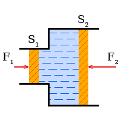
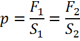
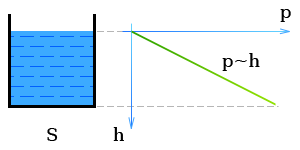
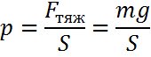
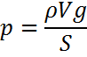

Давление в жидкостяхДавление поршня, Гидравлический прессЕсли на жидкость действует внешнее давление, то вследствиеподвижности молекул это давление передается одинаково во все стороны. В гидравлическом прессе на все поршни действует одинаковое давление. Однако, вследствие того, что площади поршней различны, силы действующие на них, не одинаковы. Согласно формуле: Определение: Гидравлический пресс уравновешивает давление в ступенях. Силы относятся друг к другу как площади поршней, т.е. как квадраты диаметров поршней:  Это соотношение лежит в основе действия различных подъемных механизмов (домкрат, подъемник), гидравлических тормозов, преобразователей давления и т.д. Давление столба жидкостиВ каждой жидкости существует давление, обусловленное ее собственным весом. Так, например, давление на основание столба воды высотой 10м составляет около 10^5Па. Если
то давление в жидкости равно ее весу, деленному на площадь  используя формулу — масса через плотность и объем, имеем  Так как объем есть произведение высоты на площадь V = Sh, то Примечание: Плотность жидкости ρ зависит от температуры. Для очень точных вычислений плотность следует рассчитывать по специальной формуле. Давление на данной глубине одинаково во всех направлениях. Соотношение между единицами давления. Суммарное давление, обусловленное весом столба жидкости и давлением поршня, называют гидростатическим давлением. |